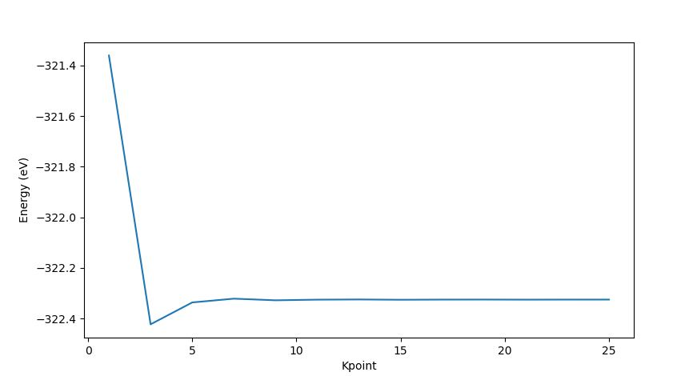

k-point sampling
K-point sampling
이번장에서는 NanoCore를 이용해 그래핀 모델을 생성하고, k-point sampling 과정을 통해 전체 에너지가 수렴하는 k-point를 구할 것이다.
from NanoCore import *
import numpy as np
# Modeling
atoms = carbonlab.grp(0,0)
# Number of system's atoms
num_atoms = len(atoms._atoms)
# Test for supercell
kpoint_sample = [1, 3, 5, 7, 9, 11, 13, 15, 17, 19, 21, 23, 25]
Energy = [] # given energy
for i in kpoint_sample:
sim = s2.Siesta(atoms)
sim.set_option('CGsteps', 0)
sim.set_option('kgrid', [i, i, 1])
sim.set_option('kshift', [0.5,0.5,0.0]) # set k shift from gamma
sim.set_option('MixingWt', 0.10) # adjust mixing weight (density)
sim.set_option('BasisSize', 'SZ') # adjust basis size
sim.run(mpi=1, nproc=8)
energy = s2.get_total_energy()
Energy.append(energy)
f = open('Ediff.txt', 'w')
for i in range(len(Energy)+1):
if i == 0:
f.write('k-points : %02d %02d %02d, Energy = %9.5f, Ediff= %s' % (2*i+1, 2*i+1, 1, Energy[i], 'Not_intial_difference'))
f.write('\n')
elif i < len(Energy):
f.write('k-points : %02d %02d %02d, Energy = %9.5f, Ediff=%9.5f' % (2*i+1, 2*i+1, 1, Energy[i], Energy[i]-Energy[i-1]))
f.write('\n')
elif i == len(Energy):
f.write('over')
f.write('\n')
else:
pass
f.close()
k-points : 01 01 01, Energy = -321.36050, Ediff= Not_intial_difference
k-points : 03 03 01, Energy = -322.42307, Ediff= -1.06257
k-points : 05 05 01, Energy = -322.33655, Ediff= 0.08653
k-points : 07 07 01, Energy = -322.32165, Ediff= 0.01490
k-points : 09 09 01, Energy = -322.32810, Ediff= -0.00645
k-points : 11 11 01, Energy = -322.32556, Ediff= 0.00253
k-points : 13 13 01, Energy = -322.32485, Ediff= 0.00072
k-points : 15 15 01, Energy = -322.32595, Ediff= -0.00110
k-points : 17 17 01, Energy = -322.32532, Ediff= 0.00063
k-points : 19 19 01, Energy = -322.32518, Ediff= 0.00014
k-points : 21 21 01, Energy = -322.32555, Ediff= -0.00036
k-points : 23 23 01, Energy = -322.32530, Ediff= 0.00024
k-points : 25 25 01, Energy = -322.32526, Ediff= 0.00005
over
import os, sys
def file_len(filename):
with open(filename) as f:
for i, l in enumerate(f):
pass
return i+1
tlines = file_len('RUN.fdf')
struct_info1 = []
struct_info2 = []
f = open('RUN.fdf', 'r')
for i in range(tlines):
line = f.readline()
words = line.split()
struct_info1.append(line)
struct_info2.append(words)
f.close()
# Get line DM.Tolerence
for i in range(len(struct_info1)):
if len(struct_info2[i]) >= 2:
if (struct_info2[i][0]) =='DM.Tolerance':
startnum = i
else:
pass
tolerance = []
tolerance = struct_info2[startnum][1]
Tol = int(tolerance[4])
tole=1.00000
for i in range(Tol):
tole=tole*0.1
# Checking Energy difference and find proper k-point
tline2 = file_len('Ediff.txt')
struct_info3 = []
struct_info4 = []
f = open('Ediff.txt', 'r')
for i in range(tline2):
line = f.readline()
words = line.split()
struct_info3.append(line)
struct_info4.append(words)
f.close()
#---------------------------------------------------------
for i in range(len(struct_info3)):
if str(struct_info3[i].strip()) == 'over':
blacknum = i+1
else:
pass
for j in range(1, blacknum-1):
if abs(float(struct_info4[j][9])) <= tole:
print('kpoint= %s' % struct_info4[j][2])
kpoint=2*j+1
else:
print('kpoint is not converage')
print('Converge kpoint = %d' % kpoint)
결과정리
plt.plot(kpoint_sample, Energy)
plt.xlabel("Kpoint")
plt.ylabel("Energy (eV)")
plt.savefig('k-test.png', dpi=300, bbox_inches ="tight")
plt.show()

kpoint is not converage
kpoint is not converage
kpoint is not converage
kpoint is not converage
kpoint is not converage
kpoint is not converage
kpoint is not converage
kpoint is not converage
kpoint is not converage
kpoint is not converage
kpoint is not converage
kpoint= 25
Converge kpoint = 25